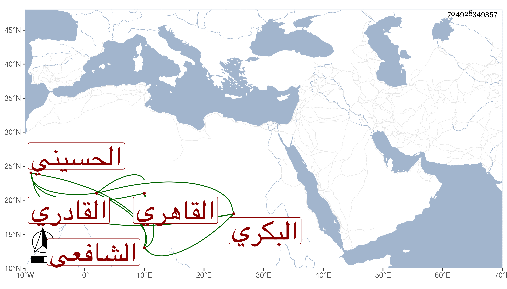

0902Sakhawi.DawLamic.ITO20230111-ara1.EIS1600.704928349357
Biography ID: 704928349357
423
محمد بن علي بن أبي بكر بن إبراهيم بن أحمد الشمس البكري القاهري الحسيني الشافعي القادري ويعرف بالبكري . ولد قبل القرن بالمقس وحفظ القرآن عند الشمس بن الخص وحضر دروس الشهاب المحلي خطيب جامع ابن ميالة والبهاء بن الحارس المحلي الفرضي وسمع على شيخنا وغيره بل تردد إلي في الإملاء وغيره وأخذ عن معتوق القادري نزيل ميدان القمح وانعزل عن الناس مع سكون وبهاء واعتقده طائفة كأبي السعادات البلقيني . وهو في سنة تسع وتسعين في الأحياء .
